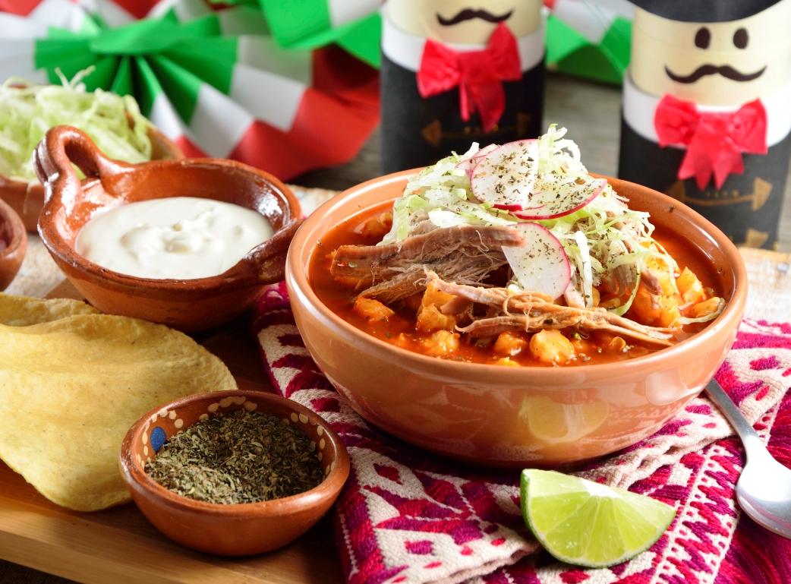

This Mexican pork stew can be served without the pork rinds and pigs' feet, if desired, but it will not be authentic. Posole may be served as a main dish with tortillas or crackers.
Ingredients
- 2 pounds boneless pork loin, cubed
- 8 ounces fried pork skins
- 2 pig's feet
- 1 tablespoon salt
- 2 (15 ounce) cans white hominy, drained
- 1 teaspoon dried oregano
- 2 cloves garlic, crushed
- 2 tablespoons chopped onion
- 4 dried hot red chile pepper pods, seeded and diced
Steps
- Place meat, pork rinds, and pork shanks in a large kettle and add about 5 quarts of water or enough to cover meat. Add approximately 1 tablespoon salt and bring to a boil. Cook over medium heat for about 1 1/2 hours.
- Remove excess grease and set aside. Reserve liquid.
- Wash the posole very carefully until the water is clear so as to remove lime from kernels. Put in large kettle and cover with water. Boil until posole has popped.
- Mix meat, posole, rind, and shanks or pigs' feet. Add oregano, garlic, onion, and chile pods. Let simmer for about 1/2 hour.